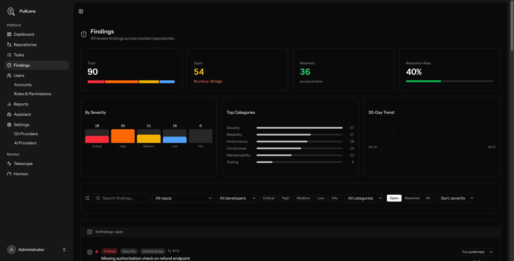

Findings
The backlog of problems found across every repository, and how to work through it.

What counts as a finding
PullLens reports problems that can cause an incident or real maintenance pain - not style. It deliberately does not comment on formatting or subjective preferences: a reviewer that cries wolf gets muted, and then it catches nothing at all.
Severity
| Severity | Means | Examples |
|---|---|---|
| Critical | Exploitable or data-destroying. Fix before merge. | SQL injection, missing authorization, leaked secret |
| High | Likely to cause an incident. | Race condition, unbounded query, unverified webhook |
| Medium | Wrong under some conditions. | Money as float, timezone assumption, missing backoff |
| Low | Worth fixing, not urgent. | Duplicated validation, missing return type |
| Informational | Advice, not a defect. | A suggestion for a future refactor |
Categories
| Category | Covers |
|---|---|
| Security | Injection, authorization, secrets, unsafe deserialization, SSRF |
| Correctness | Logic that produces the wrong answer |
| Reliability | Crashes, unbounded growth, missing error handling |
| Performance | N+1 queries, needless work in a loop, missing indexes |
| Maintainability | Duplication and structure that will cost later |
| Testing | Untested paths, particularly ones that regressed before |
Filtering and searching
| Control | Notes |
|---|---|
| Search | Matches finding titles. Literal - typing % searches for a percent sign. |
| Repository / Developer | Only values that actually have findings are offered. |
| Severity | Multi-select; combine critical and high to get a triage queue. |
| Category | One category at a time. |
| Open / Resolved / All | Defaults to open. |
| Sort | Severity (most serious first), newest, or grouped by category. |
Totals, categories and the trend describe the whole backlog for the selected repository and developer. Narrowing to "critical only" does not change the totals you are comparing against - otherwise the denominator would move every time you filtered.
Resolving a finding
Every finding is tracked until it is closed with a reason, so "we'll deal with it later" becomes a number you can see.
| Resolution | Use when |
|---|---|
| Fix confirmed | Fixed and verified. PullLens also sets this automatically when a later review shows the issue is gone. |
| Fix submitted | A fix is in flight but not yet merged. |
| Acknowledged | Real, accepted, deliberately not being fixed now. |
| Won't fix | Real, and a decision has been taken not to act. |
| False positive | Not actually a problem. These are excluded from developer quality scores, so a noisy reviewer does not penalise anyone. |
Select several with the checkboxes to resolve them together. Re-resolving an already-closed finding does not overwrite the original reason or timestamp.
On the pull request itself
Findings are posted as inline comments on the affected lines, with an explanation and a suggested fix, plus a summary review. If Allow replies is enabled, a developer can reply to argue a finding is wrong and PullLens will evaluate the claim and mark it a false positive if it agrees.